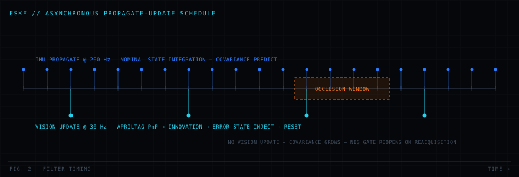

Home / Projects / PRJ-01 GHOST
GHOST
GPS-DENIED · HARDWARE · OCCLUSION-SURVIVABLE · TRACKER
A dual-filter visual-inertial estimator for vehicles that lose GNSS and then lose sight of the thing they are tracking. One filter holds the vehicle's own state; a second holds the target's. Both are designed to degrade predictably rather than diverge.

01Problem
GNSS is the first capability an autonomous vehicle loses, to jamming, to an urban canyon, to a bridge deck, to a warehouse roof. The moment it goes, a vehicle that was fusing GPS into its navigation filter has no absolute position reference, and dead reckoning on a consumer-grade MEMS IMU drifts on the order of metres within seconds.
The harder half of the problem is the second object. A vehicle tracking a moving target through a camera does not lose the target gradually, it loses it instantly and completely when the target passes behind an obstruction, and it needs to re-acquire the correct target on the far side rather than latching onto the nearest blob. A single monolithic filter handling both ego-state and target state couples those two failures together: a vision dropout that should only degrade target knowledge instead corrupts the vehicle's own position estimate.
Problem statement. Estimate vehicle pose and target state, without GNSS, on Raspberry Pi-class compute, such that a multi-second visual occlusion degrades the target estimate gracefully and does not degrade the vehicle estimate at all.
02Requirements
Derived from the problem statement and written to be individually verifiable. Verification method is part of the requirement, not an afterthought.
| ID | Requirement | Value | Verification |
|---|---|---|---|
| GH-001 | Ego-state estimate shall be produced without any GNSS input | Hard constraint | Inspection of filter inputs |
| GH-002 | Filter shall propagate at the IMU sample rate | 200 Hz | Timing trace on target |
| GH-003 | Vision measurements shall be incorporated at camera frame rate | 30 Hz | Timing trace on target |
| GH-004 | Target track shall survive visual occlusion without divergence | ≥ 2 s coast | SITL injection test |
| GH-005 | Filter shall reject measurement outliers before update | χ² gate, 95% | NIS log analysis |
| GH-006 | Estimator shall be statistically consistent | NIS in bounds ≥ 90% of samples | Monte Carlo NIS test |
| GH-007 | Full pipeline shall run in real time on the flight computer | Raspberry Pi 4B | Hardware timing run |
| GH-008 | Estimate shall be publishable to an autopilot | MAVLink over UDP | PX4 SITL loopback |
| GH-009 | Every run shall emit machine-readable evidence | CSV + plots | Artefact inspection |
GH-001 through GH-006, GH-008 and GH-009 are satisfied and demonstrated in simulation. GH-007 is not yet verified on hardware: see Challenges.
03Constraints
| Compute | Raspberry Pi 4B, 4 GB, quad Cortex-A72 @ 1.5 GHz, no GPU acceleration, no NPU |
|---|---|
| Camera | IMX296 global shutter, chosen over rolling shutter so that fast rotation does not skew the projected tag geometry |
| IMU | ICM-42688-P, 6-axis, 200 Hz sampling |
| Autopilot | PX4 in software-in-the-loop, MAVLink over UDP |
| OS | Ubuntu 22.04 aarch64 |
- No GNSS anywhere in the loop: including for initialisation or as a sanity reference.
- CPU only. Every algorithm has to close its timing budget on four ARM cores shared with the OS.
- Single camera. No stereo baseline, so absolute scale must come from known tag geometry.
- Consumer MEMS IMU. Bias instability and random walk are large enough that unaided coasting is measured in seconds, not minutes.
- Deterministic evidence. Any claim about the filter has to be reproducible from a logged run.
04System design
The central design decision is the split into two filters. A single joint filter over vehicle and target state is statistically defensible and, on paper, slightly more accurate, the cross covariance between vehicle and target error carries real information. It was rejected for two reasons: it grows the state dimension into a region where the covariance update stops fitting the CPU budget at 200 Hz, and it couples the failure modes. In a joint filter, a target occlusion enters the same covariance block as vehicle pose. In the split design, an occlusion is contained: the tracker coasts, the ego filter never notices.

Design decisions
| Decision | Chosen | Rejected alternative | Rationale |
|---|---|---|---|
| DD-1 | Split ego / target filters | Single joint filter | Failure containment and CPU budget outweigh the lost cross-covariance information |
| DD-2 | Error-state KF | Direct-state EKF on quaternion | Error state is minimal and near-zero, so the linearisation point is always good and there is no quaternion normalisation constraint inside the covariance |
| DD-3 | IMM (CV + CTRV) | Single constant-velocity model | A single CV model lags badly through turns; IMM keeps a turning hypothesis alive at negligible cost for two models |
| DD-4 | Fiducial (AprilTag) fixes | Feature-based visual odometry | Tags give absolute, unambiguous, metrically scaled pose from a single camera; VO gives drift and a scale ambiguity |
| DD-5 | Global shutter sensor | Rolling shutter | Rolling shutter skews tag corners under rotation, biasing the PnP solution exactly when the vehicle is manoeuvring |
| DD-6 | χ² innovation gate | Accept all measurements | One bad PnP solution from a partially-occluded tag can move the state further than a second of coasting |
05Mathematical models
Nominal state and error state
The filter carries a nominal state that is integrated open-loop from the IMU, and a small error state that the vision measurements correct. The true state is the composition of the two.
Propagation
Between vision fixes the nominal state is integrated from bias-corrected IMU samples, and the error-state covariance is propagated through the linearised error dynamics.
At Δt = 5 ms the first-order expansion of the state transition matrix is accurate to well below the process-noise floor, so the matrix exponential is never formed.
Measurement update
An AprilTag detection is solved for camera-frame tag pose by perspective-n-point, then expressed as a position and attitude measurement of the vehicle. The innovation is gated before it is applied.
Injection and reset
The correction is folded into the nominal state and the error state is zeroed, which is what keeps the linearisation point valid indefinitely.
Target motion models
The tracker runs two hypotheses in parallel. Constant velocity is correct most of the time; constant turn rate is correct exactly when constant velocity is worst.
06Algorithms used
- Error-state Kalman filter (ESKF)9-state ego estimator, 200 Hz propagate / 30 Hz update.
- IMU preintegration: bias-compensated integration of Δv and Δθ between vision frames, so a late frame does not force a re-integration from scratch.
- AprilTag detection and PnP pose solve: absolute, metrically scaled pose fix from a single camera.
- Interacting multiple model (IMM) filterCV/CTRV mixture with Markov switching for the target track.
- χ² innovation gating (NIS): outlier rejection at the 95% level, with the gate widened on reacquisition to account for the inflated covariance after a coast.
- Joseph-form covariance update: numerically stable symmetric update, which matters when a filter runs for hours in single precision on an embedded target.

07Implementation
| Estimation core | C++, fixed-size matrices, no dynamic allocation in the propagate/update path |
|---|---|
| Tooling & analysis | Python, scenario generation, NIS analysis, plotting, evidence packaging |
| Autopilot interface | MAVLink over UDP into PX4 SITL, publishing vision position estimates |
| Target platform | Raspberry Pi 4B, Ubuntu 22.04 aarch64 |
| Sensors | IMX296 global-shutter camera, ICM-42688-P IMU |
| Continuous integration | Automated build and filter-consistency tests on every commit |
Implementation notes
- The propagate path allocates nothing. Every matrix is fixed-size and stack-resident, because a heap allocation inside a 5 ms budget is a latency spike waiting to happen.
- Covariance is only ever updated in Joseph form, and symmetry is re-imposed as
P = ½(P + Pᵀ)after each update to stop asymmetry accumulating. - Timestamps come from the sensor, not from the moment the process happened to read it, the cause of the first serious divergence found in testing.
08Testing
Testing is layered so that a failure is attributable to a level, rather than to "the filter".
- Unit level. Quaternion composition, skew-symmetric operators, Jacobian construction and the Joseph update are tested against analytically known cases.
- Filter level, noise-free. With a perfect IMU and perfect measurements the estimate must track truth to numerical precision. This catches sign and frame errors that noise would otherwise mask.
- Filter level, stochastic. Simulated IMU noise and bias, simulated PnP measurement noise, repeated over seeded runs to produce NIS statistics.
- Occlusion injection. Vision measurements are deliberately withheld for a defined window; the test asserts that covariance grows monotonically, that no update is applied during the window, and that the track re-acquires after it.
- SITL integration. The estimate is published to PX4 over MAVLink and the closed loop is exercised end to end.
09Validation
Accuracy alone does not validate a filter. A filter can be accurate and still be lying about its own uncertainty, and a downstream autopilot that trusts an over-confident covariance will act on a bad estimate. The validation criterion is therefore consistency: the normalised innovation squared must follow its χ² distribution.
NIS above the band means the filter is over-confident (Q or R too small); below the band means it is under-confident and discarding information it should be using. Both are failures, and both are invisible if you only plot position error.
NIS consistency checking is implemented and runs in CI. Hardware-in-the-loop validation on the physical rig is pending camera driver resolution.
10Performance
Design budget for the estimation pipeline. The propagation step is the one that must never miss, because a missed propagate is a permanent gap in the integrated state.
Plots and hardware photography for this project are being prepared. The source and generated output are in the repository.
11Engineering tradeoffs
| Tradeoff | Gained | Paid |
|---|---|---|
| Split filters over joint filter | Failure containment, lower CPU, simpler tuning | Cross-correlation information between vehicle and target error is discarded |
| Fiducial tags over visual odometry | Absolute scale, no drift, unambiguous data association | Requires prepared environment, will not generalise to arbitrary scenes |
| IMM over single model | Turns tracked without lag | Roughly double the tracker compute and an extra transition matrix to tune |
| Aggressive χ² gating | Immune to bad PnP solutions from partial occlusion | Legitimate measurements are occasionally rejected during fast reacquisition |
| Global shutter over rolling shutter | No geometric skew under rotation | More expensive sensor, less mature driver support, which became the blocking issue |
12Challenges
Sensor synchronisation drift
The filter diverged during rapid motion in early testing while looking perfectly healthy at rest. The cause was timestamping: IMU samples were being labelled with the time the process read them, not the time the sensor captured them. Under fast rotation the resulting few-millisecond offset placed an attitude measurement against the wrong propagated state, and the filter confidently corrected toward an error. Resolved by driving timestamps from a hardware-level interrupt so that IMU samples and camera frames share a common time base.
Camera driver, the current blocker
Bring-up is stopped on an IMX296 driver/kernel issue under Ubuntu 22.04 on aarch64. This is stated plainly rather than papered over: the software layer, ESKF, IMM tracker, NIS validation, CI , is complete and committed, and the hardware layer is not yet demonstrated. A portfolio that hides its blockers is not an engineering document.
Design review discipline
The design went through 10 documented revisions with 20 engineering flaws found and fixed via external review. Several were frame-convention errors that would have produced a filter that looked stable and was quietly wrong, the exact failure mode that survives casual testing.
13Lessons learned
- Time is a sensor measurement. Every timestamp needs a stated origin and a bounded error, and it deserves the same scepticism as any other measurement.
- Consistency beats accuracy as an acceptance criterion. Error plots can look excellent while the covariance is a fiction; NIS catches it, RMS error does not.
- Architect for failure containment. The best property of the split-filter design is not its performance, it is that one subsystem's bad day stays inside that subsystem.
- Pick the component with the boring driver. The global-shutter sensor was the right engineering choice on optics and the wrong one on schedule risk. Supply-chain and software-maturity risk are design parameters.
- External review finds what self-review cannot. Twenty flaws found by other people is twenty flaws that would otherwise have shipped.
14Future work
- Resolve the IMX296 driver issue or fall back to a supported global-shutter module, then complete hardware timing and NIS validation.
- Extend the ego state from 9 to 15 elements by estimating accelerometer and gyroscope biases online instead of calibrating them offline.
- Add a loosely-coupled visual-odometry channel so the estimator degrades to relative navigation when no tag is in view, rather than to pure inertial coasting.
- Replace the fixed IMM transition matrix with an adaptive one driven by observed model likelihood.
- Fly the loop closed on a physical airframe rather than in SITL.
15Gallery
Hardware photography and result plots for this project are being prepared. In the meantime the full source, commit history and any generated output live in the repository.